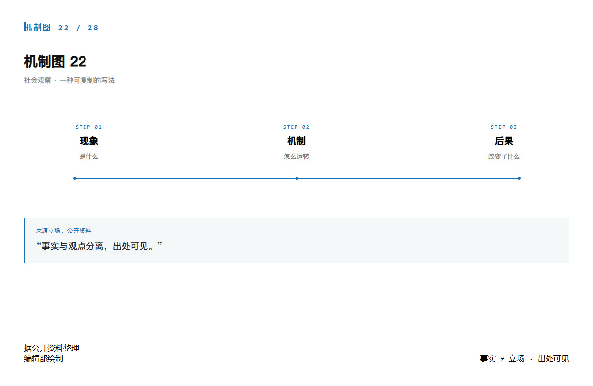

当自述成为文体，事实就输了
社会观察 · 一种可复制的写法
2018 年之后，一种写法开始频繁出现：第一人称、密集细节、直接展示伤痛、道德判断前置。它有流传很广的名字——小作文。
我只分析文体结构，不转述任何具体指控，涉及未证实的内容一个字都不展开。材料来自公开评论汇编，以及媒体和学界对这一现象的讨论。
抛开个案内容，只看文本形态。2018 年后的典型自述长文几乎都具备同一组零件：第一人称叙事、高密度细节、伤痛展示、道德判断前置，以及一个明确的诉求或告别。五样齐全，感染力就到位了。
这些零件可以归纳，也因此可以复制。写作门槛从「你得会写」降到了「照着要素填」，产能一下子被解放出来：同一种结构，可以套进完全不同的事件里。
它的对手是机构化的事实陈述：警方通报、法院文书、公司声明、核查报道。这些文体要守程序、留余地、不出结论，语气克制到近乎冷淡。
📌 一个值得记住的判断
小作文不是某个人写得好不好，而是一种被类型化的文体。可复制就意味着可批量生产，写得好不好早已不是关键。
一份「经查，情况如下」的通报，在互动定价的系统里，被一篇细节饱满的自述按在地上摩擦。这不是通报写得不好，而是两种文体在同一竞技场比赛，裁判只认情绪唤起量。
彩礼案的那场连麦里，当事人的说法在 28 分钟里改了四次，从「是他不负责任」挪到「是我害了他」。被剪成切片到处传的，只有中间最刺眼的一句。
公共讨论里有一种定性叫「弱者策略论」：在正式渠道失灵、成本高企或不被信任的地方，把自述发到舆论场，是弱者仅存的可动用资源。情绪动员不是堕落，而是资源极不对称下唯一的杠杆。
自述的流行，某种意义上是在给正式渠道打分：投诉、仲裁、司法越走不通，这种文体就越频繁地出现。这个因果关系不能倒过来读。
另一种定性完全相反，叫「武器滥用论」。当自述绕开证据与程序、直接用情绪触发定性，它就在事实上架空了「谁主张谁举证」的公共准则。个案的诉求与群体的叙事权力合流之后，
被指控者在程序结论出来之前，就已经社会性地死亡了。这一步不需要谁下命令，它自发完成，而且事后很难修复——澄清跑得再快，也追不上第一句话。
这种解释不否认有人真的受了委屈，它担心的是：当情绪可以直接触发定性，程序就成了舆论的注脚；这套玩法一旦成为默认，谁都可能被套进去。
两种解释都描述了真实发生的事情，而且互相以对方为食：正式渠道越失灵，自述就越被依赖；自述用得越多，程序公信越被消耗，渠道又显得更失灵。这是互激结构，不是能判出胜负的辩论。
这和你有什么关系？下次看见一篇让人当场站队的自述，先别急着判人：细节是否可核，判断是否跑在事实前面，被说起的那一方有没有回应。
值得推动的不是禁掉某种文体，而是把正式渠道「被听见的成本」降下来。渠道好了，武器自然降温；渠道不好，禁掉武器只会把没资源的人逼回沉默。
来源立场：学界（两种相反解释并列，均为综述性转述）
「在正式渠道失灵处，情绪化自述是弱者仅存的可动用资源。」／「当情绪可以直接触发定性，程序就成了舆论的注脚。」
前一句为弱者策略论，后一句为武器滥用论。两句都描述了真实发生的事情，并列呈现，不替读者选边。

▲ 自述文体的可复制结构（编辑部绘制）
✍️ 读到一篇自述长文，你的第一反应是相信，还是先找证据？
两种反应都很正常，说说你是哪一种。觉得有用，点个赞、点个「在看」，转给也会刷到这类长文的人。
接下来：这套机制怎么一步步长进平台、制度与日常语言。
资料来源
「小作文」从 2017 年普通长文案演变为情感动员文体，据媒体评论与公开语料的通行观察，系描述性判断。
「弱者策略论」与「武器滥用论」两种定性，均为公共讨论中代表性立场的综述性转述，非单一作者原话；立场：学界，并列呈现。
彩礼案连麦中当事人说法的改动，据 2026.11.11 公开连麦转写稿（单方口述，未经另一方证实）；切片传播形态据公开观察。
「文体竞争中的传播不对称」为编辑部据分发机制所作的分析性推论，非实证统计结论。
社会观察，不站任何性别立场。事实据公开来源，未证实指控不转述、不评价。两种相反解释并列呈现，不替读者选边。拆解规则是为了理解，不是行动指南。